Games are disappearing.You can help.
Video games have been part of our culture for over 50 years, and have never been more popular than they are today. But unlike other art forms, the preservation of video game history and culture is largely underfunded and community driven.
Learn more about how you can help ensure games and their history are preserved and accessible for generations to come.
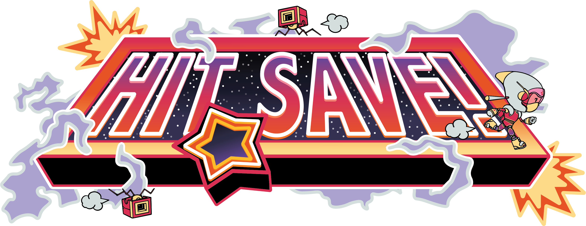
Hit Save! Game Preservation Society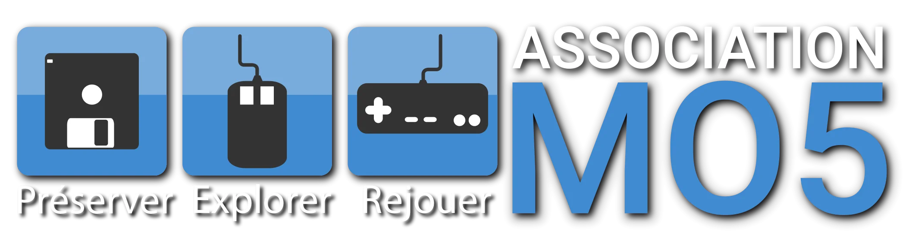
MO5 Herní Historie Bibliothèque nationale de France (BnF) Silicium OrdiRetro Musée Bolo Computerspielemuseum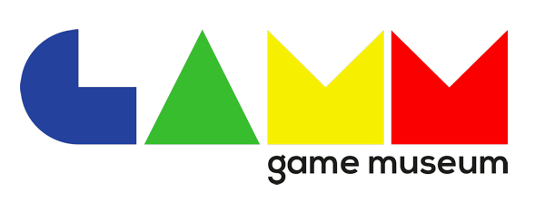
GAMM – Game Museum Nexon Computer Museum The Strong National Museum of Play National Videogame Museum (UK) National Videogame Museum (USA) Computer History Museum The MADE Sound and Vision (Beeld & Geluid)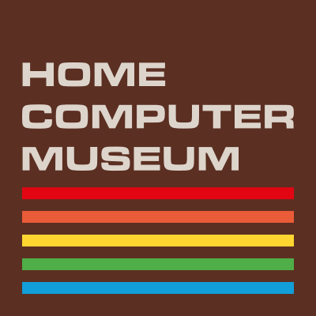
HomeComputerMuseum Royal Library of Denmark National Library of Sweden Centre for Computing History Ritsumeikan Center for Game Studies The Finnish Museum of Games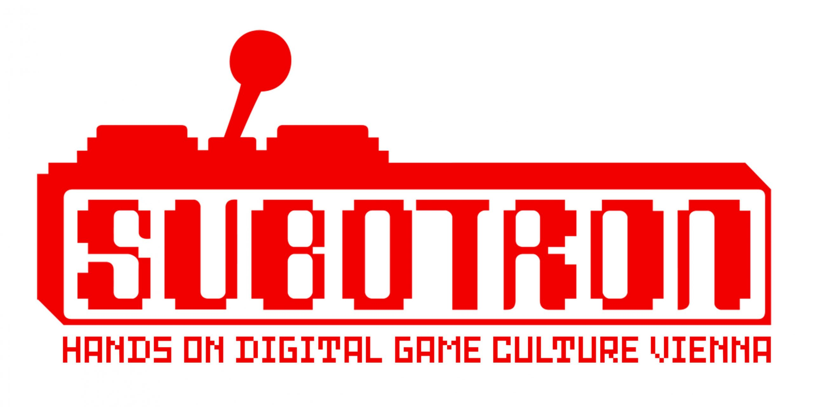
SUBOTRON Conservatoire National du Jeu Vidéo (CNJV) WDA CCF Computer Museum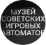
Museum of Soviet Arcade Machines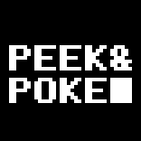
PEEK&POKE Computer Museum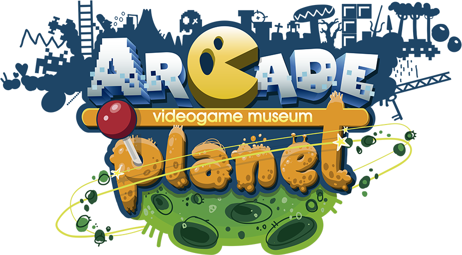
Arcade Planet ACMI The Nostalgia Box Retro Video Game Museum at The Gamesmen Museu Bojogá de Jogos Eletrônicos Museo de Informática de la República Argentina (Fundación ICATEC) Video Game History Foundation (VGHF) Hit Save! Game Preservation Society MO5 Herní Historie Bibliothèque nationale de France (BnF) Silicium OrdiRetro Musée Bolo Computerspielemuseum GAMM – Game Museum Nexon Computer Museum The Strong National Museum of Play National Videogame Museum (UK) National Videogame Museum (USA) Computer History Museum The MADE Sound and Vision (Beeld & Geluid) HomeComputerMuseum Royal Library of Denmark National Library of Sweden Centre for Computing History Ritsumeikan Center for Game Studies The Finnish Museum of Games SUBOTRON Conservatoire National du Jeu Vidéo (CNJV) WDA CCF Computer Museum Museum of Soviet Arcade Machines PEEK&POKE Computer Museum Arcade Planet ACMI The Nostalgia Box Retro Video Game Museum at The Gamesmen Museu Bojogá de Jogos Eletrônicos Museo de Informática de la República Argentina (Fundación ICATEC)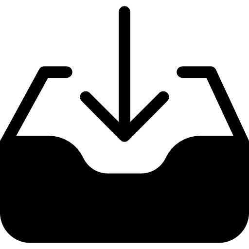
Dumping.Guide Scanning.Guide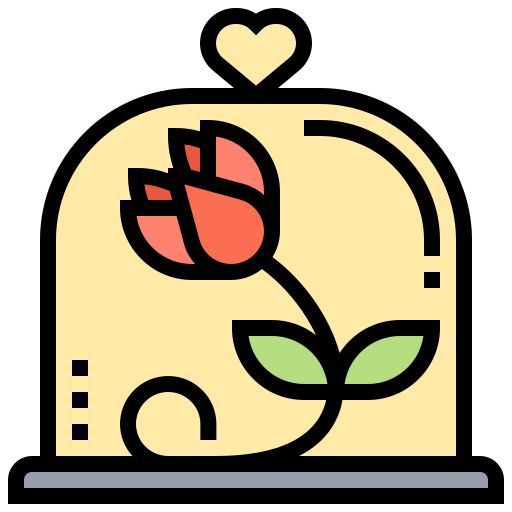
Preservation.Guide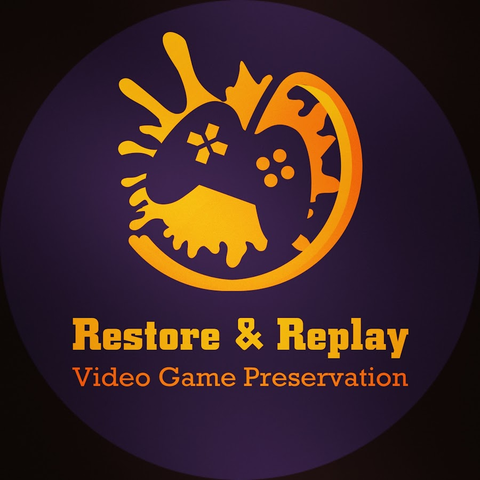
Restore and Replay Video Game Preservation Collective (VGPC) Gaming Alexandria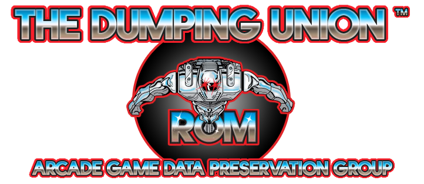
Dumping Union Flashpoint Archive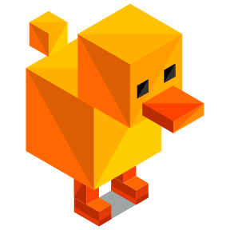
DuckStation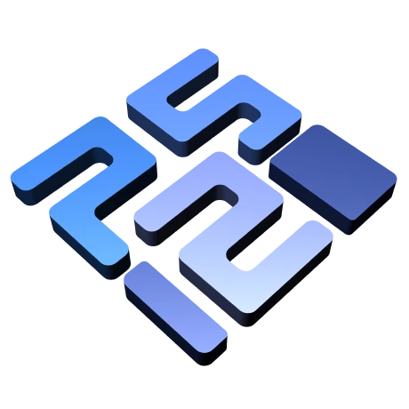
PCSX2 RPCS3 PPSSPP Dolphin Flycast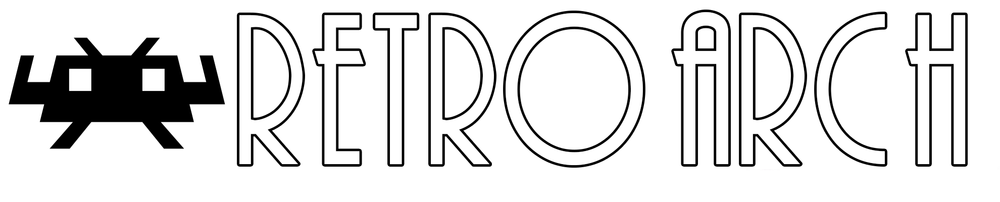
RetroArch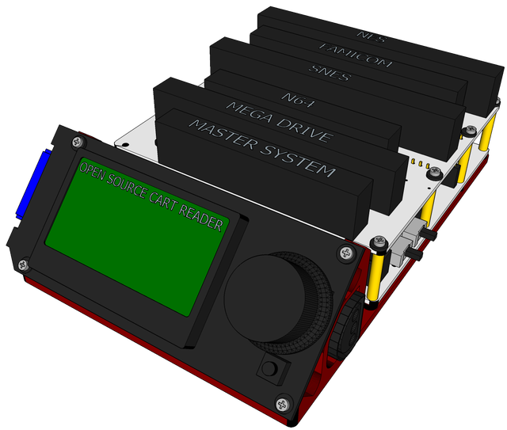
Open Source Cart Reader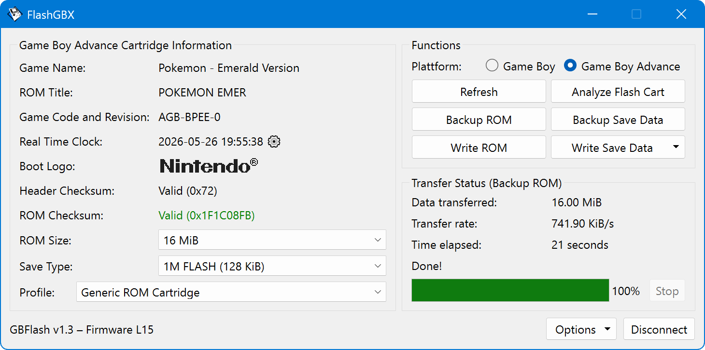
FlashGBX GodMode9 GodMode9i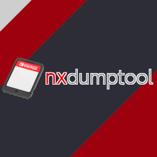
nxDumpTool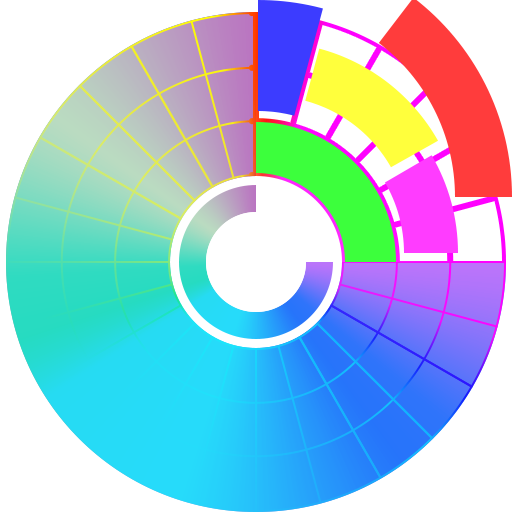
Redumper GUI DiscImageCreator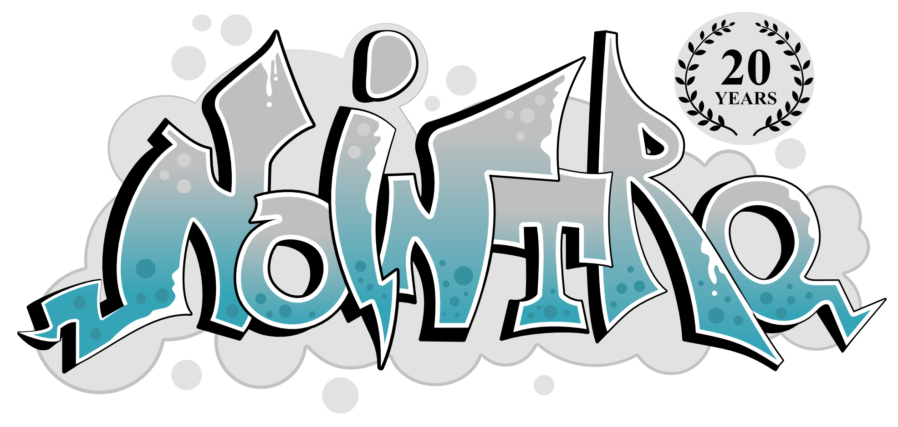
No-Intro Redump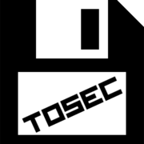
TOSEC MobyGames IGDB VGMdb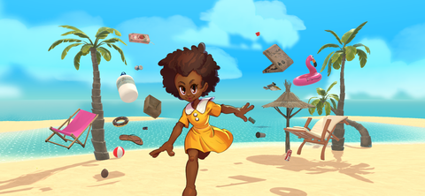
African Digital Games Database The Cutting Room Floor (TCRF)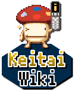
Keitai Wiki StrategyWiki Internet Archive Hit Save! Archive VGHF Digital Archive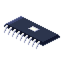
Hidden Palace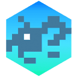
Unseen64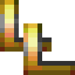
Lost Levels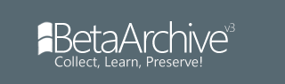
BetaArchive Africa Games Industry Report Games Industry Africa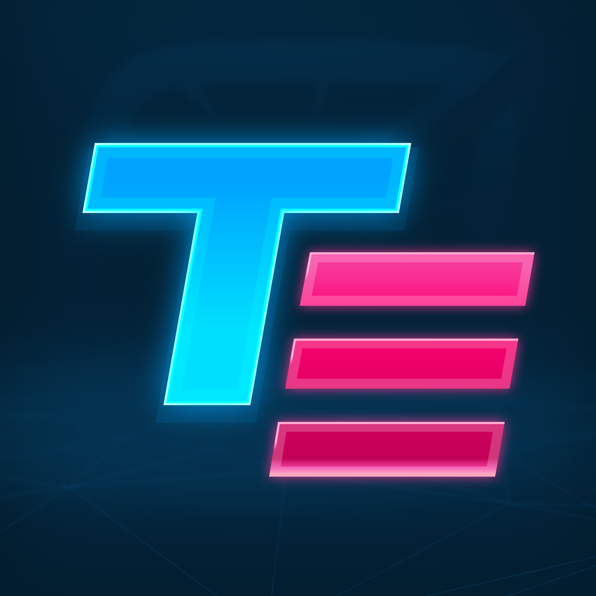
Time Extension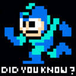
Did You Know Gaming? Dumping.Guide Scanning.Guide Preservation.Guide Restore and Replay Video Game Preservation Collective (VGPC) Gaming Alexandria Dumping Union Flashpoint ArchivePreservation Organizations
Video Game History Foundation (VGHF)
501(c)(3) nonprofit dedicated to preserving, celebrating, and teaching the history of video games.
Hit Save!
501(c)(3) nonprofit dedicated to video game preservation through community-driven projects.
Game Preservation Society
Nonprofit archive organization collecting, preserving, digitizing, and publishing Japanese game culture materials from the 1970s through the 1990s.
MO5
A French association dedicated to the preservation and dissemination of digital, video game, and computer heritage.
Herní Historie
A Czech initiative focused on documenting and preserving the history of video games and their cultural impact.
Bibliothèque nationale de France (BnF)
France's national library with legal deposit collections including video game materials.
Silicium
French association preserving computing and video game heritage.
OrdiRetro
French association promoting and preserving retro computing and video games.
Musée Bolo
Swiss museum dedicated to computer history, digital culture, and video games.
Computerspielemuseum
Berlin museum exploring the culture and history of video games.
GAMM – Game Museum
Rome's reimagined video game museum offering immersive, interactive exhibits and preserved artifacts.
Nexon Computer Museum
Jeju, South Korea museum dedicated to computer and game history.
The Strong National Museum of Play
Rochester, NY museum devoted to the history of play, with extensive collections and research including video games.
National Videogame Museum (UK)
UK museum celebrating and preserving video game culture.
National Videogame Museum (USA)
Frisco, Texas museum preserving video game history through interactive exhibits and educational programs.
Computer History Museum
Silicon Valley museum dedicated to decoding computing history and its impact, through artifacts, exhibits, and oral histories.
The MADE
Oakland nonprofit museum focused on playable preservation of video games and digital entertainment, with education and community programs.
Sound and Vision (Beeld & Geluid)
The Netherlands Institute for Sound and Vision with game-related collections.
HomeComputerMuseum
Interactive Dutch museum in Helmond exploring home-computer history and related devices.
Royal Library of Denmark
National library of Denmark including digital legal deposit collections.
National Library of Sweden
Sweden's national library; legal deposit covers physical games, while digital and online games are collected mainly through donations.
Centre for Computing History
Cambridge museum and archive dedicated to computing and video game history.
Ritsumeikan Center for Game Studies
Academic center in Japan researching and preserving game culture and materials.
The Finnish Museum of Games
Museum in Tampere dedicated to Finnish gaming history.
SUBOTRON
Vienna-based platform for digital game culture, events, and industry networking.
Conservatoire National du Jeu Vidéo (CNJV)
French conservatory dedicated to preserving and promoting the nation's video game heritage.
WDA
French volunteer association collecting, preserving, and restoring digital heritage, including retro-gaming and computing collections.
CCF Computer Museum
Computer museum supported by CCF preserving China's computing history and artifacts.
Museum of Soviet Arcade Machines
Hands-on museum featuring restored arcade machines from the Soviet era.
PEEK&POKE Computer Museum
Rijeka, Croatia museum dedicated to vintage computing and digital culture.
Arcade Planet
Spain's large arcade and preservation project with playable cabinets and exhibits.
ACMI
Australia's national museum of screen culture in Melbourne, with major game exhibitions and preservation work.
The Nostalgia Box
Interactive video game console museum in West Perth (City West), open Tue–Sun.
Retro Video Game Museum at The Gamesmen
Permanent retro gaming display inside The Gamesmen retail store in Penshurst, Sydney.
Museu Bojogá de Jogos Eletrônicos
Fortaleza museum with a permanent installation at Casa de Cultura Digital and active festivals.
Museo de Informática de la República Argentina (Fundación ICATEC)
Argentine computing-history foundation; its Buenos Aires museum closed in 2022 and donated its collection to Espacio Tec in Bahía Blanca.
Visit in Person
Museums and national libraries you can visit to explore video game history firsthand.
Bibliothèque nationale de France (BnF)
France's national library with legal deposit collections including video game materials.
Musée Bolo
Swiss museum dedicated to computer history, digital culture, and video games.
Computerspielemuseum
Berlin museum exploring the culture and history of video games.
GAMM – Game Museum
Rome's reimagined video game museum offering immersive, interactive exhibits and preserved artifacts.
Nexon Computer Museum
Jeju, South Korea museum dedicated to computer and game history.
The Strong National Museum of Play
Rochester, NY museum devoted to the history of play, with extensive collections and research including video games.
National Videogame Museum (UK)
UK museum celebrating and preserving video game culture.
National Videogame Museum (USA)
Frisco, Texas museum preserving video game history through interactive exhibits and educational programs.
Computer History Museum
Silicon Valley museum dedicated to decoding computing history and its impact, through artifacts, exhibits, and oral histories.
The MADE
Oakland nonprofit museum focused on playable preservation of video games and digital entertainment, with education and community programs.
Sound and Vision (Beeld & Geluid)
The Netherlands Institute for Sound and Vision with game-related collections.
HomeComputerMuseum
Interactive Dutch museum in Helmond exploring home-computer history and related devices.
Royal Library of Denmark
National library of Denmark including digital legal deposit collections.
National Library of Sweden
Sweden's national library; legal deposit covers physical games, while digital and online games are collected mainly through donations.
Centre for Computing History
Cambridge museum and archive dedicated to computing and video game history.
The Finnish Museum of Games
Museum in Tampere dedicated to Finnish gaming history.
CCF Computer Museum
Computer museum supported by CCF preserving China's computing history and artifacts.
Museum of Soviet Arcade Machines
Hands-on museum featuring restored arcade machines from the Soviet era.
PEEK&POKE Computer Museum
Rijeka, Croatia museum dedicated to vintage computing and digital culture.
ACMI
Australia's national museum of screen culture in Melbourne, with major game exhibitions and preservation work.
The Nostalgia Box
Interactive video game console museum in West Perth (City West), open Tue–Sun.
Museu Bojogá de Jogos Eletrônicos
Fortaleza museum with a permanent installation at Casa de Cultura Digital and active festivals.
Preservation Guides
Dumping.Guide
Learn how to create accurate digital copies of game data from physical media.
Scanning.Guide
Guidelines for scanning game-related materials like manuals, box art, and documentation.
Preservation.Guide
Introductory portal to video game preservation, covering dumping, scanning, research resources, and community organizations.
Restore and Replay
Video guides on cleaning and preserving game media, with methods backed by testing and community feedback.
Communities
Discord servers, forums, and volunteer groups where preservationists learn, coordinate, and contribute.
Video Game Preservation Collective (VGPC)
Community hub that connects newcomers with established preservation projects and teaches how to contribute without hoarding or duplicating work.
Gaming Alexandria
Preservation community sharing high-resolution scans, articles, interviews, and prototype dumps before materials are lost.
Dumping Union
Collaborative group of arcade collectors and dumpers locating and preserving undumped arcade boards for projects like MAME.
Flashpoint Archive
Community effort preserving web games, animations, and interactive media across Flash and other legacy web technologies.
Open Source Projects

MAME
Reference emulator preserving arcade, computer, and console systems through software lists and CHD imaging.
Ares
Cycle-accurate multi-system emulator for NES, SNES, Game Boy, Mega Drive, and other classic hardware.
ScummVM
Engine reimplementation preserving classic graphical adventure and role-playing games across many engines and platforms.
DuckStation
PlayStation emulator emphasizing accuracy, low overhead, and support for cue/bin and CHD dumps.
PCSX2
PlayStation 2 emulator supporting ISO, CHD, and physical disc images for play and verification.
RPCS3
Open-source PlayStation 3 emulator for running decrypted disc and digital titles on desktop platforms.
PPSSPP
PSP emulator that runs UMD ISOs and decrypted dumps on desktop and mobile platforms.
Dolphin
GameCube and Wii emulator focused on compatibility, enhancements, and disc-based preservation workflows.
Flycast
Dreamcast, Naomi, and Atomiswave emulator supporting GD-ROM, GDI, and CHD preservation formats.
melonDS
Nintendo DS emulator with Wi-Fi support and focus on faithful hardware behavior.
Azahar
Active open-source Nintendo 3DS emulator, continuing development after Citra, with support for CIA and 3DS dumps.
Xemu
Original Xbox emulator supporting ISO and disc images for play and compatibility testing.
RetroArch
Cross-platform frontend bundling Libretro cores for accurate emulation across dozens of classic systems.
Open Source Cart Reader
Arduino-based dumper recommended by Dumping.Guide for NES, SNES, N64, Game Boy, Mega Drive, and more.
FlashGBX
Cross-platform software for dumping Game Boy and GBA carts via GBxCart RW, Joey Jr, and similar readers.
GodMode9
Nintendo 3DS and DSi homebrew for dumping cartridges, saves, and system data to SD card.
GodMode9i
Nintendo DS and DSi file browser for dumping GBA and DS cartridges using a flashcart-equipped console.
nxDumpTool
Nintendo Switch homebrew for dumping game cards and installed titles to verified formats.

redumper
Redump's preferred open-source optical disc dumper for byte-perfect CD, DVD, and Blu-ray preservation.
Redumper GUI
Cross-platform GUI for redumper optical disc dumping, with optional MPF post-processing integration.
DiscImageCreator
Redump-compatible CLI dumper for CD, GD-ROM, DVD, Blu-ray, GameCube, Wii, Xbox, and floppy media.
Media Preservation Frontend
GUI front-end bundling redumper, DiscImageCreator, and Aaru, recommended by Redump and Dumping.Guide.
Aaru
Data-preservation suite for imaging, analyzing, and converting floppy, optical, and exotic media.

CleanRip
GameCube and Wii homebrew for creating raw disc dumps without modchip hardware.

Media Authenticator
Redump companion tool for verifying optical-disc dumps against community hash databases.
ddrescue
GNU data recovery tool for copying data from failing or damaged block devices and optical media.
Resources
Know an organization, guide, tool, community, or resource we should list? We review every suggestion. Suggest a resource.
No-Intro
Community project cataloging and verifying the best available copies of ROMs and digital games, with DAT files and an online database.
Redump
A project dedicated to the preservation of optical disc-based games through accurate dumps and verification.
TOSEC
The Old School Emulation Center, community-maintained DAT files cataloging retro software, firmware, and related media across hundreds of platforms.
MobyGames
Extensive catalog of game metadata, credits, cover art, and platform information across decades of releases.
IGDB
Internet Game Database, community-driven game metadata used by preservation projects, emulators, and frontends.
VGMdb
Catalog of video game and anime soundtracks, albums, composers, and track listings.
African Digital Games Database
Database of notable games developed and produced in Africa, with studio, genre, and play links.
The Cutting Room Floor (TCRF)
A wiki documenting unused, hidden, and cut content found in video games through datamining and research.
Keitai Wiki
A community wiki dedicated to documenting Japanese mobile phone games, platforms, and keitai culture.
StrategyWiki
A collaborative wiki cataloguing gameplay, mechanics, and structure across thousands of games.
Internet Archive
Non-profit digital library with vast collections of software, games, manuals, and related media.
Hit Save! Archive
Browse Hit Save!'s physical archive holdings, including magazines, books, games, machines, press materials, and more.
VGHF Digital Archive
Portal to the Video Game History Foundation's digitized collections, including magazines, press kits, development materials, and research documents.
Hidden Palace
Archives and publishes video game prototypes, betas, prereleases, and other rare development material.
Unseen64
Documents cancelled, beta, and unreleased video games with research, media, and interviews.
Lost Levels
Long-running site by Frank Cifaldi documenting unreleased and prototype games through articles, research, and community discussion.
BetaArchive
Community preserving beta and pre-release software, including many game prototypes and early builds.
Africa Games Industry Report
Award-winning publication with market data, developer surveys, and insights on Africa's games industry.
Games Industry Africa
News, profiles, resources, and industry reports covering African game developers and studios.
GamesIndustry.biz
Leading games industry news covering business, development, market data, and trends worldwide.

Retro Gamer
UK magazine and website covering retro gaming history, hardware, and classic game preservation stories.
Time Extension
Retro gaming news, features, and reviews from the team behind Retro Gamer and GamesRadar+.
Did You Know Gaming?
Gaming trivia, development history, and video deep-dives on obscure facts and behind-the-scenes stories.